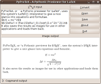

Some of programs I wrote and some current projects. When possible they are distributed under the GNU General Public License or, for Lua-related projects, the MIT/X License (a three-clause, non advertising, BSD license). Programs for the HP48 graphic calculator are in its own section. People interested in know what other software I use should take a look in this page.
Abelhas ("bees" in Portuguese) is a Lua package for particle swarm optimization -- a straightforward optimization technique for discrete and linear functions. As a pure-Lua software, it will run in every system with a Lua interpreter.
Sked is a personal organizer, calendar, schedule and braindump application with a wiki-like syntax for text formatting and organization. It's easier think of it as the result of the merge of a calendar with a desktop wiki. Everything is tailored to speed up editing operations and ease the usage workflow: links and styles are unobtrusively inferred from the syntax, entries are automatically saved after a few seconds, almost all commands have keyboard shortcuts, and the last entries are kept in a history. Also, the wiki code is not hidden from the editing interface -- this makes editing easier, avoids the create/view/change cycle, and allows copy and pasting text among other applications without loss of information. A user-defined delay is given before the text reformatting, so, its appearance will not change while the user is typing. All entries are stored in encrypted Berkeley DB4 database in the user's $HOME directory.
Lua-eSpeak is a Lua binding to the eSpeak text-to-speech (TTS) library. It adds voice synthetisation features to the standard Lua interpreter. Works under Linux and Unix.
Lua-GD is a Lua binding to the GD image drawing library. It adds image authoring features to the standard Lua interpreter. Works under Linux, Unix and Windows.

PyPreTeX, or "Pythonic Previewer for LaTeX", is a small Python application that uses the LaTeX interpreter to display and save equations from TeX code. It is a handy tool for previewing and exporting equations as PNG images to other applications. It also saves the LaTeX code into the output files, so, it can be loaded back and edited. For Linux (but it may work in other Unix-like systems).
Lua-iconv is a Lua binding to the POSIX iconv library. The iconv library converts a sequence of characters from one codeset into a sequence of corresponding characters in another codeset.
A small library that provides the POSIX crypt() to the standard Lua interpreter. It's my first "real" Lua module ;)
A small command-line application that formats LISP code into HTML.
An Lua script to automate the handling of #include guards in C header files. Just run the script to the file and it will add the guard or do nothing if it already exists.
An Lua script that converts ".sub" subtitle files into ".srt" ones.
An Lua script that changes the timing of ".sub" subtitle files. Useful for synchronization.
I really small application that converts text files in header files for use in C code; 100% pure ANSI C. Pick up, compile, and run.
An old Perl script for thumbnailing and indexing images in HTML files. It generates index files for all image files in a given directory. Runs under Unix systems and needs the ImageMagick.
A command-line application that generates C arrays with the contents of a given binary file. Useful for including binaries into applications. This package includes the C source code and some old Linux binaries. It can be compiled in any Unix system (and, maybe, Windows).
A Python script that reads vBulletin-based Web forums and outputs RSS data for use with any news aggregator. The script is utterly small and may be easily adapted.
A Perl script that reads phpBB2 bulletin boards and outputs RSS data for use with any news aggregator. The script is utterly small and may be easily adapted.
A Perl script that reads Phorum bulletin boards and outputs RSS data for use with any news aggregator. The script is utterly small and may be easily adapted.
A nice and minimalistic CMS I wrote for handling my old homepage. It features some automation and allows uploading of local files to the web server. All data are stored in portable flat-files, so no database is needed.
A PHP script that renders images from text using TrueType fonts. It allows some dynamic generation of artistic headings for webpages.
An nice AutoLISP routine that draws integrated circuits with DIL encapsulation. You give some information about the circuit and it does the boring drawing work. For AutoCAD R14.
A nice Delphi program and the circuitry needed for building a single-channel digital oscilloscope. Utterly simple, but it was a nice learning time. WARNING: This is a old program that works under Windows 9x/ME only. I used direct hardware access functions that does not work on newer Windows releases. Feel free to fix this.
A nice Pascal-based RPN calculator, with scripts, aliases, etc. available for MS-DOS/Windows and Linux and written when I was learning Pascal.
A toy Pascal program for sending and receiving data from the parallel port in MS-DOS. Written when a was studying electronics.
A Pascal program and the circuitry needed to build a voltmeter on the parallel port. For MS-DOS.
{kind=link}